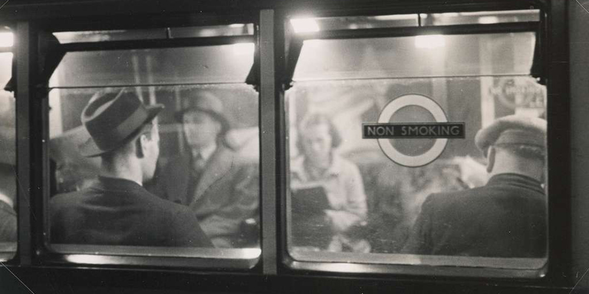
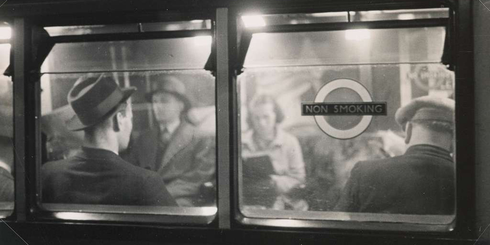

The London Underground, also referred to as the Underground or the Tube, has been serving the city since it first opened the Metropolitan line in 1863. With just 8 stations, this humble rail line was the world’s first underground railway and is one of the key reasons the city has flourished in the modern era. Today, the Tube covers all nine zones of the city with 272 stations across 11 rail lines (tfl.gov).
 

For the first 50 years of the underground, the focus was expansion within the most central zones of the city. The next 50 years strove to fold the London suburbs into the transit network. The first new line through central London since the early days of the underground came with the Victoria Line in 1968. The Jubilee Line became the most recent addition to the network in 1979, and the 11 lines have continued growing ever since (tfl.gov).
The Underground was privately owned by various rail companies until 2003, when it became a sub-brand of the publicly funded Transit for London (TfL). While the Elizabeth Line, which opened in 2022, is considered by many to be the most recent 12th line, it technically lives as its own entity under the TfL umbrella. While it connects with many tube lines, it is separated into distinct stations with underground passageways connecting Elizabeth Line stations to Underground Stations that share locations.